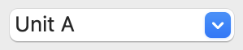

8.2. Creating and editing symbols
8.2.1. Overview of symbols and symbol libraries
A symbol is a schematic representation of a component. A symbol is composed of:
-
Graphical items (lines, circles, arcs, text, etc.) that determine how symbol looks in a schematic.
-
Pins, which have both graphic properties (line, clock, inverted, low level active, etc.) and electrical properties (input, output, bidirectional, etc.) used by the Electrical Rules Check (ERC) tool.
-
Fields, such as references, values, corresponding footprint names for PCB design, etc.
A symbol library is composed of one or more symbols. Generally the symbols are logically grouped by function, type, and/or manufacturer.
Symbols can be derived from another symbol in the same library. Derived symbols share the base symbol’s graphical shape and pin definitions, but can override the base symbol’s property fields (value, footprint, footprint filters, datasheet, description, etc.). Derived symbols can be used to define symbols that are similar to a base part. For example, 74LS00, 74HC00, and 7437 symbols could all be derived from a 7400 symbol. In previous versions of KiCad, derived symbols were referred to as aliases.
8.2.2. Symbol Editor overview
KiCad provides a symbol editing tool that allows you to create libraries, add, delete or transfer symbols between libraries, export symbols to files, and import symbols from files.
In general, the flow for designing a symbol involves:
-
Defining if the symbol is made up of one or more units.
-
Defining if the symbol has an alternate body style (also known as a De Morgan representation).
-
Designing its symbolic representation using lines, rectangles, circles, polygons and text.
-
Adding pins by carefully defining each pin’s graphical elements, name, number, and electrical property (input, output, tri-state, power output, etc.).
-
Determining if the symbol should be derived from another symbol with the same graphical design and pin definition.
-
Adding optional fields such as the name of the footprint used by the PCB design software and/or defining their visibility.
-
Documenting the symbol by adding a description string and links to data sheets, etc.
-
Saving it in the desired library.
The Symbol Editor main window is shown below. It consists of three toolbars for quick access to common features and a symbol viewing/editing area. Not all commands are available on the toolbars, but all commands are available in the menus.

Main Toolbar
The main toolbar is at the top of the main window. It has buttons for the undo/redo commands, zoom commands, symbol properties dialogs, and unit/representation management controls.
|
Create a new symbol in the selected library. |
|
Save the currently selected library. All modified symbols in the library will be saved. |
|
Undo last edit. |
|
Redo last undo. |
|
Refresh display. |
|
Zoom in. |
|
Zoom out. |
|
Zoom to fit symbol in display. |
|
Zoom to fit selection. |
|
Rotate counter-clockwise. |
|
Rotate clockwise. |
|
Mirror horizontally. |
|
Mirror vertically. |
|
Edit the current symbol properties. |
|
Edit the symbol’s pins in a tabular interface. |
|
Open the symbol’s datasheet, if it is defined. |
|
Test the current symbol for design errors. |
|
Select the normal body style. The button is disabled if the current symbol does not have an alternate body style. |
|
Select the alternate body style. The button is disabled if the current symbol does not have an alternate body style. |
 |
Select the unit of a multi-unit symbol to display. The drop down control will be disabled if the current symbol is not derived from a symbol with multiple units. |
|
Enable synchronized pins edit mode. When this mode is enabled, any pin modifications are propagated to all other symbol units. Pin number changes are not propagated. This mode is automatically enabled for symbols with multiple interchangeable units and cannot be enabled for symbols with only one unit. |
|
Insert current symbol into the schematic. |
Element Toolbar
The vertical toolbar located on the right hand side of the main window allows you to place all of the elements required to design a symbol.
|
Select tool. Right-clicking with the select tool opens the context menu for the object under the cursor. Left-clicking with the select tool displays the attributes of the object under the cursor in the message panel at the bottom of the main window. Double-left-clicking with the select tool will open the properties dialog for the object under the cursor. |
|
Pin tool. Left-click to add a new pin. |
|
Graphical text tool. Left-click to add a new graphical text item. |
|
Graphical textbox tool. Left-click to add a new graphical textbox item. |
|
Rectangle tool. Left-click to begin drawing the first corner of a graphical rectangle. Left-click again to place the opposite corner of the rectangle. |
|
Circle tool. Left-click to begin drawing a new graphical circle from the center. Left-click again to define the radius of the circle. |
|
Arc tool. Left-click to begin drawing a new graphical arc item from the first arc end point. Left-click again to define the second arc end point. Adjust the radius by dragging the arc center point. |
|
Connected line tool. Left-click to begin drawing a new graphical line item in the current symbol. Left-click for each additional connected line. Double-left-click to complete the line. |
|
Anchor tool. Left-click to set the anchor position of the symbol. |
|
Delete tool. Left-click to delete an object from the current symbol. |
Options Toolbar
The vertical tool bar located on the left hand side of the main window allows you to set some of the editor drawing options.
|
Toggle grid visibility on and off. |
|
Set units to inches. |
|
Set units to mils (0.001 inch). |
|
Set units to millimeters. |
|
Toggle full screen cursor on and off. |
|
Toggle display of pin electrical types. |
|
Toggle display of library and symbol tree. |
8.2.3. Saving symbols to libraries
The  button displays or
hides the list of available libraries, which allows you to select an active
library. When a symbol is saved, it will be placed in this library.
button displays or
hides the list of available libraries, which allows you to select an active
library. When a symbol is saved, it will be placed in this library.
Clicking the  icon
on the left toolbar toggles the treeview of libraries and symbols. Clicking on
a symbol opens that symbol.
icon
on the left toolbar toggles the treeview of libraries and symbols. Clicking on
a symbol opens that symbol.
|
Note
|
Some symbols are derived from other symbols. Derived symbol names are displayed in italics in the treeview. If a derived symbol is opened, its symbol graphics will not be editable. Its symbol fields will be editable as normal. To edit the graphics of a base symbol and all of its derived symbols, open the base symbol. |
After modification, a symbol can be saved in the current library or a different library.
To save the modified symbol in the current library, click the
 icon. The modifications will be
written to the existing symbol.
icon. The modifications will be
written to the existing symbol.
|
Note
|
Saving a modified symbol also saves all other modified symbols in the same library. |
To save the symbol changes to a new symbol, click File → Save As…. The symbol can be saved in the current library or a different library. A new name can be set for the symbol.
To create a new file containing only the current symbol, click File → Export → Symbol…. This file will be a standard library file which will contain only one symbol.
8.2.4. Creating symbols
Creating a new symbol
A new symbol can be created by clicking the
 icon.
You will be asked for a number of symbol properties.
icon.
You will be asked for a number of symbol properties.
-
A symbol name
-
An optional base symbol to derive the new symbol from. The new symbol will use the base symbol’s graphical shape and pin configuration, but other symbol information can be modified in the derived symbol. The base symbol must be in the same library as the new derived symbol.
-
The reference designator prefix (
U,C,R…). -
The number of units per package, and whether those units are interchangeable (for example a 7400 quad NAND symbol could have 4 units, one for each gate).
-
If an alternate body style (sometimes referred to as a "De Morgan equivalent") is desired.
-
Whether the symbol is a power symbol. Power symbols appear in the Add Power Symbol dialog in the Schematic editor, their
Valuefields are not editable in the schematic, they cannot be assigned a footprint, they are not added to the PCB, and they are not included in the bill of materials. -
Whether the symbol should be excluded from the bill of materials.
-
Whether the symbol should be excluded from the PCB.
There are also several graphical options.
-
The offset between the end of each pin and its pin name.
-
Whether the pin number and pin name should be displayed.
-
Whether the pin names should be displayed alongside the pins or at the ends of the pins inside the symbol body.
These properties can also be changed later in the Symbol Properties window.

A new symbol will be created using the properties above and will appear in the editor as shown below.

The blue cross in the center is the symbol anchor, which specifies the symbol
origin i.e. the coordinates (0, 0). The anchor can be repositioned by selecting
the  icon and clicking on the new
desired anchor position.
icon and clicking on the new
desired anchor position.
Creating a symbol from another symbol
Often, the symbol that you want to make is similar to one already in a symbol library. In this case it is easy to load and modify an existing symbol.
-
Load the symbol which will be used as a starting point.
-
Save a new copy of the symbol using File → Save As…. The Save As dialog will prompt for a name for the new symbol and the library to save it in.
-
Edit the new symbol as required.
-
Save the modified symbol.
Symbol Properties
Symbol properties are set when the symbol is created but they can be modified
at any point. To change the symbol properties, click on the
 button
to show the Symbol Properties dialog. You can also double click an empty spot in
the editing canvas.
button
to show the Symbol Properties dialog. You can also double click an empty spot in
the editing canvas.

It is important to set the number of units and check all units are interchangeable and has alternate body style, as applicable, because these settings affect how pins and graphics are added to each symbol unit.
If you change the number of units per package after adding the pins to the symbol, you will need to do extra work to add pins and graphics for the additional units. The pins and graphics would have been automatically added to each unit had these properties been correctly set initially. Nevertheless, it is possible to modify these properties at any time.
The graphic options Show pin number and Show pin name define the
visibility of the pin number and pin name text. The option Place pin
names inside defines the pin name position relative to the pin body.
The pin names will be displayed inside the symbol outline if the option
is checked. In this case the Pin Name Position Offset property defines
the shift of the text away from the body end of the pin. A value from
0.02 to 0.05 inches is usually reasonable.
The example below shows a symbol with the Place pin name inside option unchecked. Notice the position of the names and pin numbers.
Symbol Name, Description, and Keywords
Symbol name is the symbol’s name in the library. Symbols are identified by a combination of the library and symbol name.
In previous versions of KiCad, the symbol name was linked to the Value field.
This link is removed in KiCad 7.0 and later.
The symbol description should contain a brief description of the component, such as the component function, distinguishing features, and package options. The keywords should contain additional terms related to the component. Keywords are used primarily to assist in searching for the symbol.

A symbol’s name, description, and keywords are all used when searching for symbols in the Symbol Editor and Add a Symbol dialog. The description and keywords are displayed in the Symbol Library Browser and Add a Symbol dialog.
Footprint Filters
The footprint filters tab is used to define which footprints are appropriate to use with the symbol. The filters can be applied in the Footprint Assignment tool so that only appropriate footprints are displayed for each symbol.
Multiple footprint filters can be defined. Footprints that match any of the filters will be displayed; if no filters are defined, then all footprints will be displayed.
Filters can use wildcards: * matches any number of characters,
including zero, and ? matches zero or one characters. For example, SOIC-*
would match the SOIC-8_3.9x4.9mm_P1.27mm footprint as well as any other
footprint beginning with SOIC-. The filter SOT?23 matches SOT23 as well as
SOT-23.

Symbols with Alternate Symbolic Representation
If the symbol has an alternate body style defined, one body style must be
selected for editing at a time. To edit the normal representation, click
the  icon.
icon.
To edit the alternate representation, click on the
 icon.
Use the
unit selection dropdown to select the unit you wish to edit.
icon.
Use the
unit selection dropdown to select the unit you wish to edit.
8.2.5. Graphical Elements
Graphical elements create the visual representation of a symbol and contain no electrical connection information. Graphical elements are created with the following tools:
-
Lines and polygons defined by start and end points.
-
Rectangles defined by two diagonal corners.
-
Circles defined by the center and radius.
-
Arcs defined by the starting and ending point of the arc and its center. An arc goes from 0° to 180°.
The vertical toolbar on the right hand side of the main window allows you to place all of the graphical elements required to design the representation of a symbol.
Graphical Element Membership
Each graphic element (line, arc, circle, etc.) can be defined as common to all units and/or body styles or specific to a given unit and/or body style. Element options can be quickly accessed by right-clicking on the element to display the context menu for the selected element. Below is the context menu for a line element.
You can also double-left-click on an element to modify its properties. Below is the properties dialog for a polygon element.
The properties of a graphic element are:
-
Border determines whether the the shape’s outline should be drawn.
-
Width and color define the line width and color of the border. A border width of
0uses the schematic’s default symbol line width. Style determines the line style of the border (solid, dashed, dotted, etc.). -
Fill Style determines if the shape defined by the graphical element is to be drawn unfilled or filled. The fill color can be the color theme’s body outline color, body background color, or a custom color.
-
Common to all units in symbol determines if the graphical element is drawn for each unit in symbol with more than one unit per package or if the graphical element is only drawn for the current unit.
-
Common to all body styles (De Morgan) determines if the graphical element is drawn for each symbolic representation in symbols with an alternate body style or if the graphical element is only drawn for the current body style.
-
Private to Symbol Editor causes the shape to be visible only when the symbol is edited in the Symbol Editor. The shape will be hidden when the symbol is added to a schematic.
Graphical Text Elements
The  icon
allows for the creation of graphical text. Graphical text is automatically
oriented to be readable, even when the symbol is mirrored. Please note that
graphical text items are not the same as symbol fields.
icon
allows for the creation of graphical text. Graphical text is automatically
oriented to be readable, even when the symbol is mirrored. Please note that
graphical text items are not the same as symbol fields.
8.2.6. Multiple Units per Symbol and Alternate Body Styles
Symbols can have up to two body styles (a standard symbol and an alternate symbol often referred to as a "De Morgan equivalent") and/or have more than one unit per package (logic gates for example). Some symbols can have more than one unit per package each with different symbols and pin configurations.
For example, consider a relay with two switches, which can be designed as a symbol with three different units: a coil, switch 1, and switch 2. Designing a symbol with multiple units per package and/or alternate body styles is very flexible. A pin or a body symbol item can be common to all units or specific to a given unit or they can be common to both symbolic representation so are specific to a given symbol representation.
By default, pins are specific to a unit and body style. When a pin is common to all units or all body styles, it only needs to be created once. This is also the case for the body style graphic shapes and text, which may be common to each unit, but typically are specific to each body style.
To add additional units to a symbol, set the Number of Units property to the
appropriate number in the Symbol Properties dialog. By default, symbol units are
named Unit A, Unit B, etc., but you can set an arbitrary name for the
current unit using Edit → Set Unit Display Name….
To add an alternate body style, set the Has alternate body style (De Morgan) property in the Symbol Properties dialog.
Example of a Symbol With Multiple Noninterchangeable Units
For an example of a symbol with multiple units that are not interchangeable, consider a relay with 3 units per package: a coil, switch 1, and switch 2.
The three units are not all the same, so All units are interchangeable should be deselected in the Symbol Properties dialog. Alternatively, this option could have been specified when the symbol was initially created.

Unit A

Unit B

Unit C

Unit A does not have the same symbol and pin layout as Units B and C, so the units are not interchangeable.
|
Note
|
Synchronized Pins Edit Mode can be enabled by clicking the
|
8.2.7. Pin Creation and Editing
You can create and insert a pin by clicking on the
 button. Pin properties can be edited by
double clicking on the pin. You can also delete or move pins that you have
already added. Pins must be created carefully, because any error will have
consequences on the PCB design.
button. Pin properties can be edited by
double clicking on the pin. You can also delete or move pins that you have
already added. Pins must be created carefully, because any error will have
consequences on the PCB design.
Pin Overview
A pin is defined by its graphical representation, its name, and its number. The pin’s name and number can contain letters, numbers, and symbols, but not spaces. For the Electrical Rules Check (ERC) tool to be useful, the pin’s electrical type (input, output, tri-state…) must also be defined correctly. If this type is not defined properly, the schematic ERC check results may be invalid.
Important notes:
-
Symbol pins are matched to footprint pads by number. The pin number in the symbol must match the corresponding pad number in the footprint.
-
Do not use spaces in pin names and numbers. Spaces will be automatically replaced with underscores (
_). -
To define a pin name with an inverted signal (overbar) use the
~(tilde) character followed by the text to invert in braces. For example~{FO}Owould display FO O. -
If the pin name is empty, the pin is considered unnamed.
-
Pin names can be repeated in a symbol.
-
Pin numbers must be unique in a symbol.
Pin Properties

The pin properties dialog allows you to edit all of the characteristics of a pin. This dialog pops up automatically when you create a pin or when double-clicking on an existing pin. This dialog allows you to modify:
-
The pin name and text size.
-
The pin number and text size.
-
The pin length.
-
The pin electrical type and graphical style.
-
Unit and alternate representation membership.
-
Pin visibility.
Pin Graphic Styles
The different pin graphic styles are shown in the figure below. These styles are purely graphical and do not affect the pin’s electrical type.

Pin Electrical Types
Choosing the correct electrical type is important for the schematic ERC tool. ERC will check that pins are connected appropriately, for example ensuring that input pins are driven and power inputs receive power from an appropriate source.
Pin Type |
Description |
Input |
A pin which is exclusively an input. |
Output |
A pin which is exclusively an output. |
Bidirectional |
A pin that can be either an input or an output, such as a microcontroller data bus pin. |
Tri-state |
A three state output pin (high, low, or high impedance) |
Passive |
A passive symbol pin: resistors, connectors, etc. |
Free |
A pin that can be freely connected to any other pin without electrical concerns. |
Unspecified |
A pin for which the ERC check does not matter. |
Power input |
A symbol’s power pin. As a special case, power input pins that are marked invisible are automatically connected to the net with the same name. See the Power Symbols section for more information. |
Power output |
A pin that provides power to other pins, such as a regulator output. |
Open collector |
An open collector logic output. |
Open emitter |
An open emitter logic output. |
Unconnected |
A pin that should not be connected to anything. |
Pushing Pin Properties to Other Pins
You can apply the length, name size, or number size of a pin to the other pins in the symbol by right clicking the pin and selecting Push Pin Length, Push Pin Name Size, or Push Pin Number Size, respectively. All other pins in the symbol will be updated.
Defining Pins for Multiple Units and Alternate Symbolic Representations
Symbols with multiple units and/or graphical representations are particularly problematic when creating and editing pins. The majority of pins are specific to each symbol unit (because each unit has a different set of pins) and to each body style (because the form and position is different between the normal body style and the alternate form).
The symbol library editor allows the simultaneous creation of pins. By default,
changes made to a pin are made for all units of a multiple unit symbol and to
both representations for symbols with an alternate symbolic representation.
The only exception to this is the pin’s graphical type and name, which remain
unlinked between symbol units and body styles. This dependency was established
to allow for easier pin creation and editing in most cases. This dependency can
be disabled by toggling the  icon on the main tool bar. This will allow you to create pins
for each unit and representation completely independently.
icon on the main tool bar. This will allow you to create pins
for each unit and representation completely independently.
Pins can be common or specific to different units. Pins can also be common to both symbolic representations or specific to each symbolic representation. When a pin is common to all units, it only has to drawn once. Pins are set as common or specific in the pin properties dialog.
An example is the output pin in the 7400 quad dual input NAND gate. Since there
are four units and two symbolic representations, there are eight
separate output pins defined in the symbol definition. When creating
a new 7400 symbol, unit A of the normal symbolic representation will
be shown in the library editor. To edit the pin style in the alternate
symbolic representation, it must first be enabled by clicking the
 button on the tool bar. To edit the pin number for each unit,
select the appropriate unit using the
drop down control.
button on the tool bar. To edit the pin number for each unit,
select the appropriate unit using the
drop down control.
Pin Table
Another way to edit pins is to use the Pin Table, which is accessible via the
 icon. The Pin Table
displays all of the pins in the symbol and their properties in a table view, so
it is useful for making bulk pin changes.
icon. The Pin Table
displays all of the pins in the symbol and their properties in a table view, so
it is useful for making bulk pin changes.
Any pin property can be edited by clicking on the appropriate cell. Pins can be
added and removed with the  and
and
 icons, respectively.
icons, respectively.
You can edit the same property for multiple pins simultaneously by grouping
pins. Pins can be automatically grouped by name, or you manually group several
pins by selecting them and clicking Group Selected. Click the
 button to clear the manual grouping.
You can also filter the table to only display pins in certain units.
button to clear the manual grouping.
You can also filter the table to only display pins in certain units.
|
Note
|
Columns of the pin table can be shown or hidden by right-clicking on the header row and checking or unchecking additional columns. Some columns are hidden by default. |
The screenshot below shows the pin table for a quad opamp.

Alternate Pin Definitions
Pins can have alternate pin definitions added to them. Alternate pin definitions allow a user to select a different name, electrical type, and graphical style for a pin when the symbol has been placed in the schematic. This can be used for pins that have multiple functions, such as microcontroller pins.
Alternate pin definitions are added in the Pin Properties dialog as shown below. Each alternate definition contains a pin name, electrical type, and graphic style. This microcontroller pin has all of its peripheral functions defined in the symbol as alternate pin names.

Alternate pin definitions are selected in the Schematic Editor once the symbol has been placed in the schematic. The alternate pin is assigned in the Alternate Pin Assignments tab of the Symbol Properties dialog. Alternate definitions are selectable in the dropdown in the Alternate Assignment column.

8.2.8. Symbol Fields
All library symbols are defined with four default fields. The reference designator, value, footprint assignment, and datasheet link fields are created whenever a symbol is created or copied. Only the reference designator is required.
The Footprint field, if used, contains a reference to a footprint for the
symbol. The format is LIBNAME:FOOTPRINTNAME, where LIBNAME is the name of
the footprint library in the footprint library table (see the
Footprint Library Table
section in the PCB Editor manual) and FOOTPRINTNAME is the name of the
footprint in the library LIBNAME.
Symbols defined in libraries are typically defined with only these four default fields. Additional fields such as vendor, part number, unit cost, etc. can be added to library symbols but generally this is done in the schematic editor so the additional fields can be applied to all of the symbols in the schematic.
|
Note
|
A convenient way to create additional empty symbol fields is to use define field name templates. Field name templates define empty fields that are added to each symbol when it is inserted into the schematic. Field name templates can be defined globally (for all schematics) in the Schematic Editor Preferences, or they can be defined locally (specific to each project) in the Schematic Setup dialog. |
|
Note
|
If you want to manage a large amount of component data in symbol fields, consider using database libraries. |
Editing Symbol Fields
To edit an existing symbol field, double-click the field, select it or hover and press E, or right-click on the field text and select Properties….
To add new fields, delete optional fields, or edit existing fields, use the
 icon on the main tool bar to open the Symbol Properties dialog.
icon on the main tool bar to open the Symbol Properties dialog.
Fields are text information associated with the symbol. Do not confuse them with text in the graphic representation of a symbol.
8.2.9. Creating Power Symbols
Power symbols are symbols that are used to label a wire as part of a power net,
like VCC or GND. The behavior of power symbols is described in the
electrical connections section. Power symbols are handled and
created the same way as normal symbols, but there are several additional
considerations described below.
It may be useful to place power symbols in a dedicated library. KiCad’s symbol
library places power symbols in the power library, and users may create
libraries to store their own power symbols. If the Define as power symbol box
is checked in a symbol’s properties, that symbol will appear in the Schematic
Editor’s Add Power Symbol dialog for convenient access.
Below is an example of a GND power symbol.

Power symbols consist of a pin of type "Power input" that is marked invisible. They must also have the Define as power symbol property checked. Invisible power input pins have a special property of making implicit global connections based on the pin name.
|
Note
|
If the power symbol has the Define as power symbol property checked, the power input pin does not need to be marked invisible. However, the convention is to make these pins invisible anyway. |

To create a power symbol, use the following steps:
-
Add a pin of type Power input, with Visible unchecked, and the pin named according to the desired net. Make the pin number
1, the length0, and set the graphic style to Line. The pin name establishes the connection to the net; in this case the pin will automatically connect to the netGND. The pin number, length, and line style do not matter electrically. -
Place the pin on the symbol anchor.
-
Use the shape tools to draw the symbol graphics.
-
Set the symbol value. The symbol value does not matter electrically, but it is displayed in the schematic. To eliminate confusion, it should match the pin name (which determines the connected net name).
-
Check the Define as power symbol box in Symbol Properties window. This makes the symbol appear in the Add Power Symbol dialog, makes the
Valuefield read-only in the schematic, prevents the symbol from being assigned a footprint, and excludes the symbol from the board, BOM, and netlists. -
Set the symbol reference and uncheck the Show box. The reference text is not important except for the first character, which should be
#. For the power symbol shown above, the reference could be#GND. Symbols with references that begin with#are not added to the PCB, are not included in Bill of Materials exports or netlists, and they cannot be assigned a footprint in the footprint assignment tool. If a power symbol’s reference does not begin with#, the character will be inserted automatically when the annotation or footprint assignment tools are run.
An easier method to create a new power symbol is to use another symbol as a starting point, as described earlier.
|
Note
|
The connected net name is determined by the power symbol’s pin name, not the name or value of the symbol. When modifying an existing power symbol, make sure to rename the pin so that the new symbol connects to the appropriate power net. This means that power symbol net names can only be changed in the symbol editor, not in the schematic. |
8.2.10. Checking Symbols
The Symbol Editor can check for common issues in your symbols. Run the symbol
checker using the  button in
the top toolbar.
button in
the top toolbar.

The symbol checker checks for:
-
Pins that are off-grid
-
Pins that are duplicated between symbol units
-
Incorrectly designed power symbols. Power symbols should have:
-
A single unit
-
No alternate body styles
-
A single pin which is either of type Power Output (see PWR_FLAG) or invisible and of type Power Input (see power symbols)
-
-
Illegal reference designator prefixes: reference designator prefixes should not end with a number or
? -
Hidden Power Input pins in non-power symbols: these create implicit connections and are not recommended